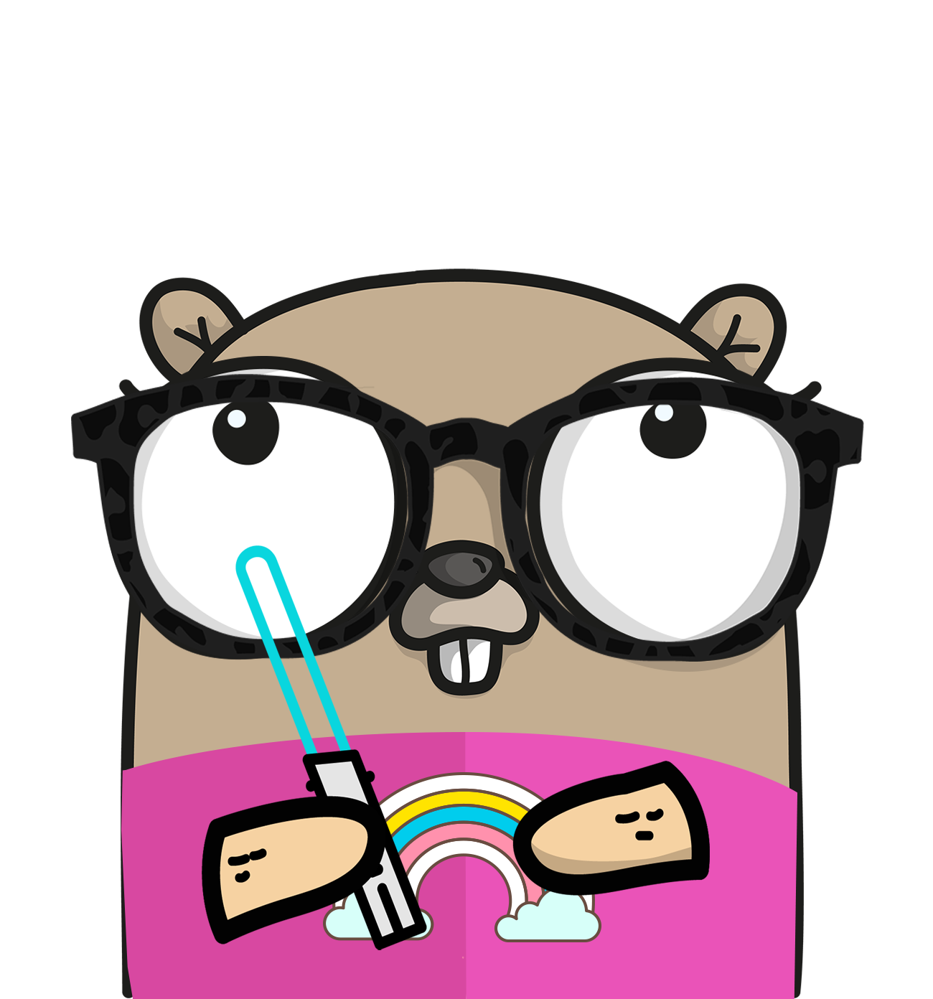

GopherCon Europe 2019
Last year's GopherCon Europe in the far-north (Iceland) was a great success! This year GopherCon Europe turns to the far south of the EU, the remote and volcanic coast of the Canaries, Tenerife!
Stay tuned for more speaker announcements and more!
Watch the talks from last year on our YouTube Channel
We are following the Go Community Code of Conduct
Schedule
May 30th
May 31st
| Time | Track 1 | Track 2 |
| 8:00-9:00 | Registration & Breakfast | |
| 9:00-9:15 | Opening words | |
| 9:15-9:45 | Opening Keynote - Cassandra Salisbury | |
| 9:45-10:00 | Break | |
| 10:00-10:30 | Finding Dependable Go Packages - Julie Qiu | Implementing RESTful APIs - Tom Ogoma |
| 10:30-10:45 | Break | |
| 10:45-11:15 | How I write HTTP web services after 8 years - Mat Ryer | LinuxBoot: Firmware Tools & a busybox in Go - Chris Koch |
| 11:15-11:45 | Coffee Break | |
| 11:45-12:15 | The Athens Project - Aaron Schlesinger | Distributed Tracing - Kevin Amuhinda |
| 12:15-12:30 | Break | |
| 12:30-13:00 | API Gateway: a Success Story - Carlos, Sara | Tackling Contention : The Monster in sync.Locker - Roberto Clapis |
| 13:00-14:30 | Lunch | |
| 14:30-15:00 | Psychology of Code Readability - Egon Elbre | Off the Chain: Scaling Blockchain in Go - Vicki Niu |
| 15:00-15:15 | Break | |
| 15:15-15:45 | Rethinking Visual Programming - Ivan Daniluk | Learn Neural Networks With Go, Not Math - Ellen Körbes |
| 15:45-16:00 | Break | |
| 16:00-16:45 | Panel Discussion - The Go Team | |
| 16:45-17:00 | Final Words | |
| 18:30-20:00 | Social event |
June 1st
| 10:00-11:00 | Breakfast and Networking |
| 10:00-13:00 | Community Day in 3 tracks: Lightning Talks, Community Meetups, TBD |
Location
Hard Rock Hotel, Tenerife, Spain

Speakers
-

Julie Qiu
Building Modules Discovery
Software Engineer - Google
 @JQiu25
@JQiu25
-

Aaron Schlesinger
The Athens Project - A Proxy Server for Go Modules
Sr. Developer Advocate - Microsoft
@arschles
-

Chris Koch
LinuxBoot: Firmware Tools & a busybox in Go
Software Engineer - Google
@hugelgupf
-

Cassandra Salisbury
Keynote
Open Source Strategy Lead for the Go Team - Google
@cassandraoid
-

Mat Ryer
How I Write HTTP Web Services After 8 Years
Co-founder of Machine Box - Veritone
@matryer
-

Ivan Daniluk
Rethinking Visual Programming With Go
@idanyliuk
-

Ellen Körbes
Learn Neural Networks With Go - Not Math!
Developer Advocate - Garden
@ellenkorbes
-

Vicki Niu
Off the Chain! Scaling Blockchains in Go
Software Engineer - Interstellar
@vickiniu
-

Sara Báez García
API Gateway, A Success Story (Joined Talk)
Backend Team Lead - System73
@Bz_Sara
-

Carlos González Vila
API Gateway, A Success Story (Joined Talk)
Infrastructure Team Lead - System73
@carlosglezvila
-

Egon Elbre
Psychology of Code Readability
@egonelbre
-

Kevin Hungai Amuhinda
Everything You Wanted to Know About Distributed Tracing in Go
@Hungai
-

Tom Ogoma
Implementing RESTful APIs in Go
Senior Consultant - Andela
@tom_ogoma
-

Roberto Clapis
Tackling Contention: The Monster in sync.Locker
Security Engineer - Google
@empijei
MCs
-

Ashley McNamara
@ashleymcnamara -

Steve Francia
@spf13
Workshops


Sponsorship
Gold Partners:


We are looking for sponsors!
Please contact team@gophercon.es to discuss sponsorship packages
Visa Assistance Letters
We are happy to provide you with an invitation letter for the conference, in case you need one upon applying for a visa. Purchase a ticket and e-mail us the confirmation, as well as your details (full name, passport number and any other information you'd like us to list in the letter) to event@gophercon.es. In case your visa is not approved, the full amount of your ticket will be refunded.
Student Discount
Your talent and enthusiasm could take you all the way to GopherCon in Tenerife! If you follow the next steps you can get a student discount.
Step 1. Have a valid Student Card
Step 2. Make a GitHub repo where you have used Go (for example: https://exercism.io/tracks/go)
Step 3. Send us an e-mail to team@gophercon.es confirming you:
- - have a student card that is valid at least until the conference date and
- - a link to the repository
After all the steps are completed, you will receive your discount code which will allow you to buy in the reduced price. In order for the entrance to be valid, you must present your Student Card at the conference.
- - have a student card that is valid at least until the conference date and
- - a link to the repository